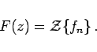
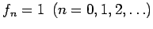
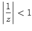
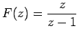
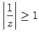
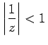

Inhalt Index DeskTop Bronstein

 Integraltransformationen Z-Transformation Eigenschaften der Z-Transformation Definition der Z-Transformation
Integraltransformationen Z-Transformation Eigenschaften der Z-Transformation Definition der Z-Transformation


Der Folge {fn} wird die unendliche Reihe
zugeordnet. Falls diese Reihe konvergiert, sagt man, die Folge {fn} ist Z-transformierbar, und schreibt
|  | (15.110) |
Man nennt {fn} Originalfolge, F(z) Bildfunktion. Mit z ist eine komplexe Variable bezeichnet, mit F(z) eine komplexwertige Funktion.
| Beispiel |
|
. Die zugehörige unendliche Reihe lautet |
Sie stellt bezüglich 1/z eine geometrische Reihe dar, die für  gegen die Reihensumme  konvergiert, für  aber divergiert. Das bedeutet, die Folge {1} ist Z-transformierbar für , d.h. für alle Punkte außerhalb des Einheitskreises | z | = 1 der z-Ebene.